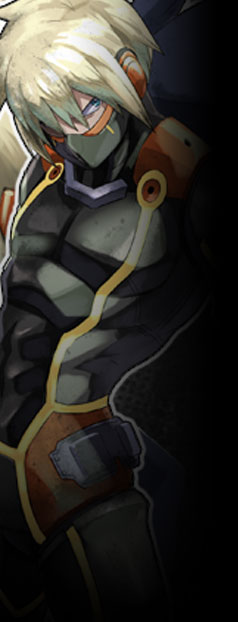

▼民間警備隊【 バスターライラック 】
ライラックホームを拠点とする、中層の民間警備隊。
中層の犯罪率抑制に多大な貢献を果たしているものの、
出身や立場に拘らず所属できるため、メンバーは多種多様。 公式サイト原文
中層の民間警備隊。
あくまで民間の警備隊のためＹＤＦより権限は低いが、
ボランティア活動なども含め、 ライラックホームを拠点としている。 |
|
 |
レオン・シグルズ
|
||||||||||||||||||
|
バスターライラック総隊長。
オルレアン構成員の中でも武闘派として知られた戦士だったが、
性格は冷静で、口数もあまり多い方ではない。
ただ、そんなアリスに似てなのか微妙に天然の気があり、
異能者ではないながらもその戦闘経験と判断力は群を抜き、
「俺はアリスが無事なら、それでいい。それだけだ。」 |
|||||||||||||||||||
公式サイト原文
レオン＝シグルス バスターライラック総隊長。
かつて対抗勢力の戦いで大怪我を負い、
アリスを実の妹の様に想っており、
能力者ではないが
「俺はアリスが無事なら、それでいい。それだけだ。」 性能：基礎５ｐステータス＋ボス特性１０ｐ |
|||||||||||||||||||